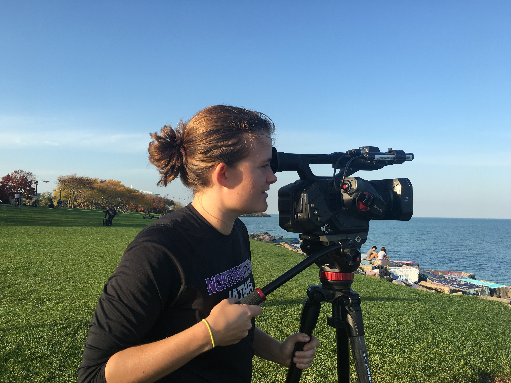
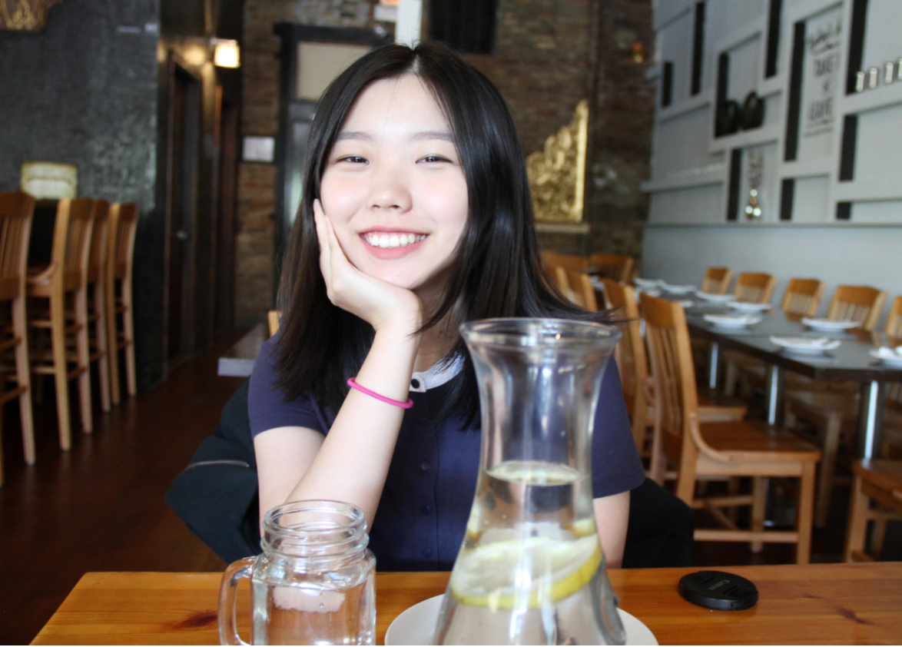
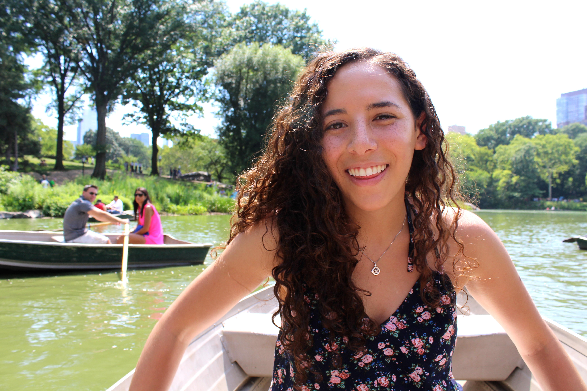

About The Creators

Katie is currently finishing up her MS in Computer Science. She began the MS last year as part of the BS/MS program after getting an undergraduate degree in Psychology. She will graduate in 2017 and is interested in pursuing user experience research and design. She is interested in virtual reality and how to design experiences in new ways.

Holly a href is a third-year broadcast journalism student at Medill. Complex and nuanced stories motivate her to be a creative storyteller, and she hopes to inspire change and empathy with interactive journalism, VR, documentaries and podcasts. (I realize that's a lot of things but they are equally great lol)

Jordan is a third-year journalism student in Medill at Northwestern University. The endless possibilities at the intersection of journalism and technology motivate her to explore different ways to tell stories. She hopes to continue developing her skills in interactive journalism, coding, and Virtual Reality.

Rebecca is a developer at Knight Lab, with previous experience at Kickstarter and in professional theater. She was a member of TimeWave Festival’s Virtual Reality Lab and has spoken at technical conferences both in the US and internationally. Rebecca cares deeply about Open Source, mentorship and leveraging technology to encourage people to engage with information more actively.